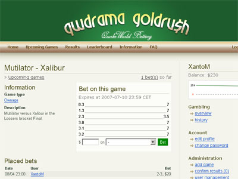

Goldrush: a place where SR luck has no power
There has been a nice flow of activity lately (both qw.nu being relaunced and ezquake heavily developed), but they aren’t the only guys staying up at night working for the qw community.
qwdrama proudly presents a new website in the qwdrama network: Goldrush
This is a site where you can gamble on QuakeWorld games. The idea is to bring a little more drama and joy to the games that are being played.

Since the odds for each game are impossible for us to decide, we figured: you decide the odds! The odds are changed dynamicly, based on how many users that bet on each option which makes the odds realistic. If 50% bet on player/team A and 50% on B, the odds will be 2:2 as it should.
The site is still in development and will be beta-tested for a period of 20 days. However, the functionality is very good and there shouldn’t be any problems with the features currently present.
Each user starts with $250 (minimum bet is $10), the user with highest balance 2007-04-28 wins the beta-period. After that, the balance for each user will be reset and we will take suggestions to improve Goldrush into consideration before relaunching the full version.
Also in the close future, winners of Frag of the week will be awarded with Goldrush money.
Enough talking, start gambling!
-
Goldrush 1.0 Featurelist
- Comments on bets/games
- Bet modes (besides outcome of the game)
- Frag count (>= x, first to x frags, last frag, first frag etc)
- Most quads/pent/bores/teamkills etc
- More coming
- Advanced leaderboard and statistics system
- Auto-login
Goldrush wishlist
- Accumalative bets / “ticket”s (multiplying the odds, have to win all the games in the “ticket”)
2hot2handle!